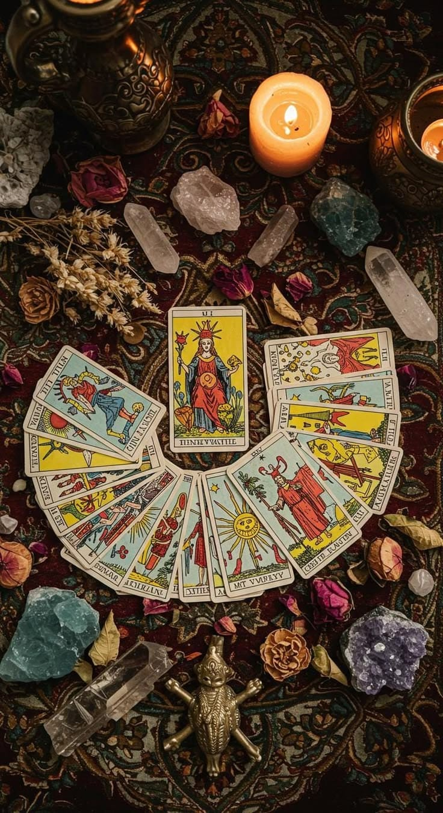
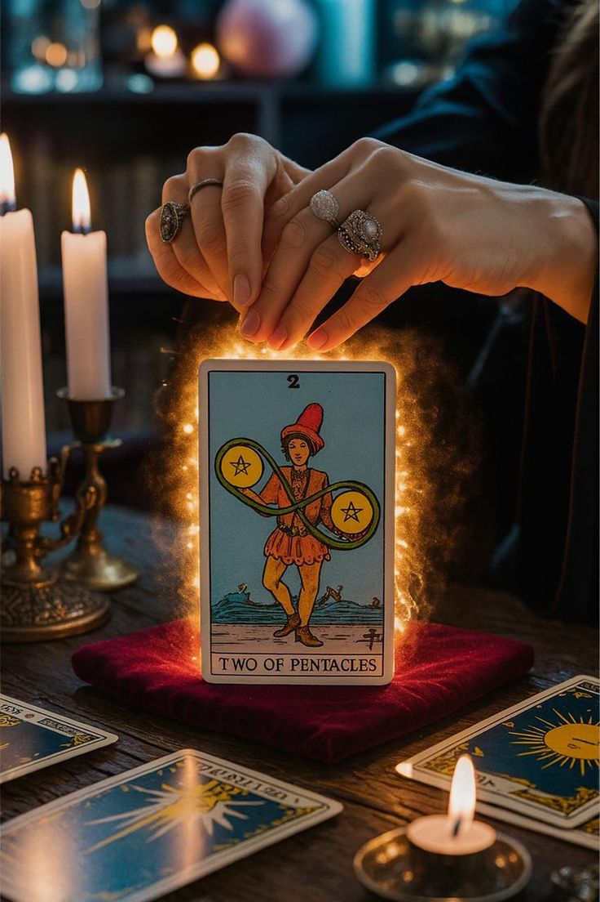

Sobre Ánima Tarot
Un espacio para traducir lo que te atraviesa en una mirada más clara, consciente y amorosa.
Cada lectura se construye desde la escucha, la intuición y la interpretación simbólica para ayudarte a comprender vínculos, decisiones, emociones y procesos que hoy necesitan otra luz. Ánima Tarot trabaja con profundidad, pero también con claridad práctica: lo que aparece en la lectura tiene que servirte en tu vida real.
Lecturas que ordenan
No se trata solo de saber qué viene, sino de comprender qué te está mostrando este momento y cómo habitarlo mejor.
Un trato cercano
Desde el primer mensaje hasta la sesión, el proceso busca que te sientas cómoda, acompañada y segura de dar el paso.
Orientación con presencia
La experiencia está cuidada para que percibas profundidad, calidez y profesionalismo antes incluso de la lectura.
Lecturas disponibles
Elige el tipo de acompañamiento que mejor responda a lo que hoy necesitas mirar.
Cada sesión tiene un enfoque distinto. Trabajo especialmente con la simbología Rider para leer procesos reales con más detalle, profundidad y lenguaje claro.
$6.000
25 minutos
3 preguntas
Lectura general inicial
Ideal si necesitas una primera claridad sin dar demasiadas vueltas: revisamos tu energía general y respondemos tres preguntas concretas para que salgas con foco, alivio y dirección.

$8.000
35 minutos
4 preguntas
Lectura general expandida
Una opción muy elegida cuando necesitas ir un poco más allá: incluye lectura general, cuatro preguntas y el desarrollo completo de un caso puntual, con cierre y consejo para que sepas cómo avanzar.

$10.000
1 hora
Lectura profunda completa
Para quienes sienten que llegó el momento de mirar en serio: una hora de lectura general, hasta seis preguntas y resolución de un caso con profundidad, contexto y orientación concreta.
Reserva tu lectura
Cuando sientas que es el momento, reserva desde aquí y pasa directo al formulario flotante.
Puedes abrir el formulario ahora mismo y dejar tu solicitud en pocos pasos, o esperar la lectura breve de cartas para entrar con una orientación inicial.
Voces que confiaron
Cuando la lectura resuena, algo interno empieza a ordenarse.
Tu lectura puede empezar hoy
Si algo dentro tuyo te trajo hasta aquí, tal vez ya sea momento de escucharlo con más profundidad.
Escríbeme, cuéntame qué te inquieta y coordinemos una lectura que te devuelva claridad, foco y una sensación más amable de tu propio proceso.